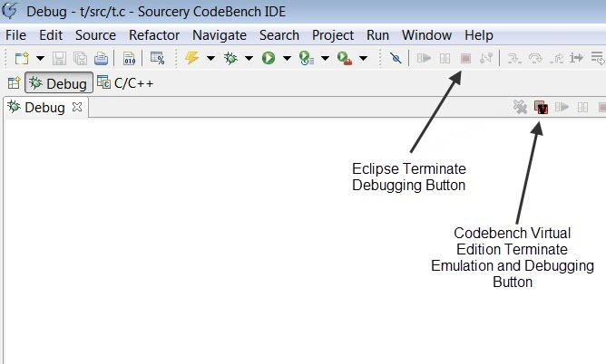

The standard Eclipse Terminate button (see Figure 7-4) will terminate the debug session in CodeBench, but will leave the emulation job and the VMAJIC debug server running. You can then relaunch the debugger for a new session.
The CodeBench Virtual Edition also provides a special Terminate Emulation and Debugging button (see Figure 7-4) that shuts down the emulation job and the VMAJIC debug server, as well as the CodeBench debugger. This frees up the Emulator when it's no longer needed.
Figure 7-4. Codebench Virtual Edition Terminate Emulation and Debug Button
Note
Setting the Ice_Shutdown_On_Exit configuration option to yes allows you to automatically shut down VMAJIC and the Veloce emulation job when finished debugging. It does not terminate immediately, but after all debug sessions are subsequently terminated, then the emulation job and VMAJIC debug server will be terminated as well. See Table 3-9 for details.